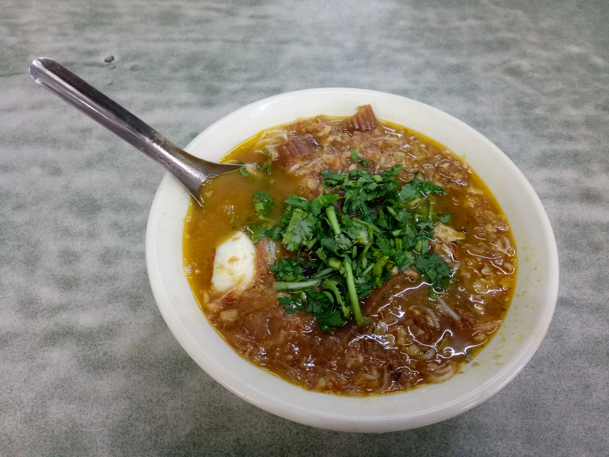

Mont Hin Gar
Return to Home

In Myanmar, Noodle with Fish Soup is known as Mote Hin Gar. Mote means Noodle. And Hin Gar means soup. Mote Hin Gar is one of favourite breakfasts in Myanmar. We can buy mote hin gar from teashop, street shop and market every morning.
Ingredients
- 1Kg thin rice noodle
- 640g cleaned cat fish
- 1 sliced banana stem (outer layers discarded, inner part sliced)
- 100g roasted rice flour (stir with 100g of water)
- 160g chicken pea
- Springs of fresh cilantro, mint , chopped
- 10 fried pea
- 20 peeled Onion
Steps
- Boil cat fish with water(300g), fishsauce(1/3 cup), turmeric(half teaspoon), lemon grass(1) for 5-7 minutes until lightly cooked. Keep the fish stock to reuse later.
- Remove the fishes from boiling pot, debone and skin, then flake flesh.
- In a pot, add water (300g), turmeric (1 teaspoon) and sliced banana stems, and marinate.
- Heat a large pot. Add fish paste, chicken pea stock, fish stock, water (2 liters), 2 lemon grass and stir until boil.
- Add roasted rice flour, blended chicken pea then stir well.
- Add fish sauce (1cup), salt (1 tablespoon) and sugar (1 tablespoon).
- Then add sliced banana stems and cook until tendered.
- Add onion at last and stir 2-3 minutes.
Home